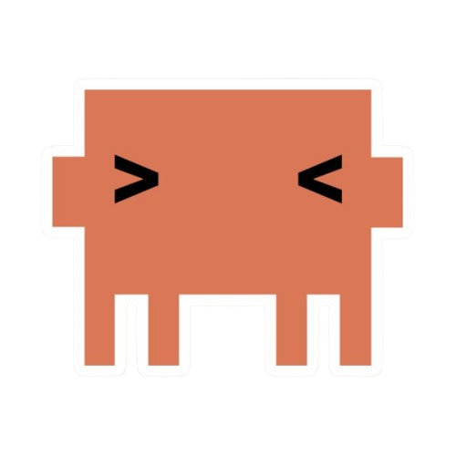
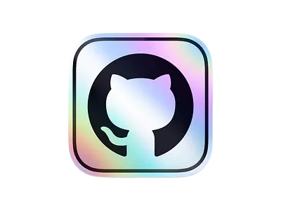

Depuis mes premiers cours d'informatique en 2022, je n'ai cessé de vouloir découvrir et apprendre — que ce soit dans le code, les réseaux ou ailleurs.
2026
Hack My Life
Participant
Hackathon pour le développement de solutions en faveur des économies d'énergie.
2025
Cybersécurité et CTF
Apprentissage
Initiation à la cybersécurité et participation à des CTF.
2024
Entrée en STI2D
Filière SIN
Début de la spécialité Systèmes d'Information et Numérique.
2024
PHP et MySQL
Développement back-end
Découverte et apprentissage de PHP et MySQL pour Nova.
2023
Réseaux informatique
Apprentissage
Découverte des réseaux, protocoles et administration système.
2023
Premiers projets personnels
Projets en autonomie
Création de premiers sites et expérimentations en HTML/CSS/JS.
2022
Découverte du HTML et CSS
Début en développement web
Premiers pas avec les langages du web, création de pages statiques.
Compétences
HTML/CSS
JavaScript
Python
C++ / Arduino
Vibe coding
Setup
Hardware
- Windows 11
- Kali Linux
- Linux Mint
- Ubuntu
Logiciels
- VS Code
- opencode
- Mistral
- Claude
- Brave
- Obsidian
En ligne
- GitHub
- Proton
- Raspberry Pi
- YouTube
- Spotify